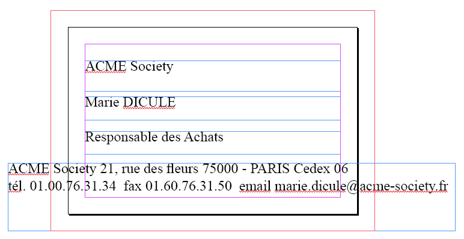

Vous pensez que faire une mise en page digne de ce nom est réservé aux professionnels ?
Mais comme tout, cela s'apprend et il existe des techniques.
Alors, fidèle au principe du site, on va étudier ensemble la théorie de la mise en page et apprendre à l'appliquer dans InDesign en partant de Zér0. Vous verrez comment mettre la technique au service de votre créativité et non plus l'inverse.
Bienvenue dans ce cours sur la mise en page avec InDesign. :) J'espère que vous prendrez autant de plaisir à le lire que j'en ai eu à l'écrire.
D'un point de vue pédagogique, j'ai choisi d'associer un projet pratique à chacune des parties. La complexité du projet ira grandissante en fonction de votre connaissance du logiciel et de vos connaissances théoriques. On va commencer doucement avec une carte de visite, on ira plus loin avec un curriculum vitae, et on terminera en apothéose avec une maquette de magazine, qui sera de loin la partie la plus dense.
La mise en page est un domaine qui fait appel à la sensibilité graphique de chacun. Vous ne trouverez peut-être pas "belles" les maquettes que je vous présenterai et sur lesquelles nous travaillerons. Mais je m'efforcerai qu'elles remplissent au mieux leur rôle, qui est de vous former à la mise en page et à l'utilisation d'InDesign afin de vous rendre autonome et créer vos propres maquettes.
Avant de commencer, je vais répondre à quelques questions qui vous aideront à mieux cerner les objectifs de ce cours.
Plutôt que de mise en page, ou maquette, on parle plus généralement de P.A.O. (Publication Assistée par Ordinateur) qui est, d’après Wikipedia, «l'ensemble des procédés informatiques (micro-ordinateur, logiciels, périphériques d’acquisition, d’écriture...) permettant de fabriquer des documents destinés à l’impression.».
Ça ne vous éclaire pas vraiment ? C’est vrai que la définition est assez vague. Alors au lieu de palabrer pendant une éternité, un exemple rapide.
Exemple 1 Voici une carte de visite. Elle vous présente les informations classiques sur une certaine Marie Dicule (vous avez noté le jeu de mots :) ? Fameux, n'est-ce pas ?) et le moyen de la contacter. Comment la trouvez-vous (la carte, pas Marie Dicule... :p ) ? Savez-vous où commencer à lire ?
Aucuns des textes ne semblent liés. On ne sait pas « dans quel sens ça marche » et trouver l'information demande un effort. Si ACME Society vend des farces et attrapes, et que vous avez quinze cartes d'autres sociétés vendant les mêmes produits, il est peu probable que vous vous attardiez sur cette société.
Voici maintenant la carte de notre Marie avec les mêmes informations, mais mises en page.
Exemple 2 La maquette est extrêmement basique mais cette fois, pas besoin de chercher où commencer. Les tailles de textes sont différentes et les informations les plus importantes sont les plus visibles. Certains textes ont aussi été regroupés.
En bref, les informations ont été hiérarchisées.
La hiérarchisation
La hiérarchisation est un concept clé dans tout travail de mise en page.
Si on cherche "hiérarchie" dans un dictionnaire de synonymes, on trouve : ordre, agencement, classement, organisation, distribution.
Hiérarchiser des informations, c’est leur donner un ordre visuel en les agençant. Ordonner ne veut pas nécessairement dire mettre l'information la plus importante en haut à gauche, et la moins importante en bas à droite. Il y a plusieurs façons de faire ressortir une information. On verra comment faire au fur et à mesure du cours, mais je suis sûr que vous pouvez déjà me citer quelques moyens : taille du texte, graisse, couleur, position...
Vous l’avez compris, quand on parle de mise en page, on parle de communication, de façon de transmettre une ou plusieurs informations, de hiérarchiser l'ensemble pour que le spectateur sache rapidement de quoi il est question et cherche à en savoir plus s'il est intéressé.
Quasiment toutes les choses sur lesquels vous posez votre regard au cours d’une journée sont mises en page. Les magazines, évidemment, mais aussi les livres, les publicités, les sites web, le plan du Métro, ou l’emballage des gâteaux que vous grignotez (vous croyez que je ne vous ai pas vu ? :lol: ).
Au milieu de toutes ces informations visuelles, s'il n'est pas un minimum guidé, l’œil peut facilement se perdre. C'est le rôle de la mise en page de remédier à cela.
On l'a vu, faire de la mise en page c'est mettre en forme des images et des textes. Peut-être avez-vous déjà eu à le faire, pour une invitation à une soirée, ou un journal scolaire par exemple. Quel logiciel avez-vous utilisé ?
Ben... Word ?
Argh ! >_ Word est un logiciel de traitement de textes. Il permet de composer des textes et possède notamment un correcteur orthographique très performant. Il possède aussi quelques outils basiques de mise en page, mais il ne faut pas longtemps pour se rendre compte qu'il n'est pas fait pour ça. Vous vous êtes tous arrachés les cheveux en essayant de faire quelque chose d'un peu compliqué, sortant du texte brut, avec Word.
OK, t'énerve pas... Avec Photoshop, alors ? C'est bien ça, Photoshop.
Non plus... :'( Photoshop est un logiciel d'édition d'images. Le meilleur de sa catégorie, ça ne fait aucun doute. Mais encore une fois, il n'est pas fait pour la mise en page. A la limite, il peut convenir pour des documents simples, d'une page, comme des affiches ou des flyers, mais ce n'est pas la peine d'espérer mettre en page correctement des documents à plusieurs pages.
Moi je sais ! Avec InDesign ! :p
Ah ben quand même. Au moins un qui a lu le titre de ce cours... ;)
Word et Photoshop sont utilisés en amont du travail de maquette, pour générer le contenu. Le logiciel de mise en page, lui, va nous permettre de jouer sur la disposition de ce contenu pour le rendre esthétiquement attrayant.
De la même façon, on ne tape pas ses textes et on ne modifie pas ses images dans InDesign.
En avançant dans le cours, quand vous découvrirez la puissance d'InDesign, vous comprendrez les différences fondamentales entre un logiciel de traitement de textes, ou d'édition d'image, et un logiciel de mise en page. Il est tout simplement conçu pour ça et tout un tas de fonctions n'existent que dans le but de faciliter la vie du maquettiste.
Vous l'avez compris, j'ai choisi de faire ce cours sur InDesign. Mais ce n'est pas le seul logiciel de PAO qui existe.
Historiquement, c’est Aldus qui créé le premier logiciel de mise en page : PageMaker, sur Mac. Puis, pendant de nombreuses années, c’est le logiciel Xpress de Quark qui domine le marché, mais aujourd’hui InDesign d’Adobe a su s'imposer et se taille la part du lion. A noter, une alternative libre et gratuite à ces deux géants : Scribus. Microsoft édite lui aussi son logiciel de mise en page : Publisher.
Pourquoi choisir InDesign ?
Premièrement, c'est le logiciel le plus utilisé aujourd'hui dans les agences de communication. Si vous décidez de faire carrière dans ce milieu, connaître InDesign est un atout.
Ensuite, il est totalement compatible avec les autres logiciels Adobe, Photoshop et Illustrator en tête. Ça signifie que vous pouvez importer directement un fichier Photoshop (.psd) dans InDesign et le retravailler dans Photoshop sans problème. InDesign détectera que le fichier a été modifié et vous proposera de mettre à jour votre maquette avec les dernières modifications du fichier Photoshop.
Enfin, à titre personnel et au niveau auquel je l'utilise, je n'ai encore jamais été limité par le logiciel.
Se procurer InDesign
InDesign coûte cher, comme souvent pour les logiciels destinés aux professionnels.
La dernière version en date, la CS5, est en vente à 1015.40€ sur le site d'Adobe. InDesign est également compris dans la Suite Adobe Design Premium qui, pour un prix de 2749.60€, vous permet d'avoir notamment Photoshop, Illustrator, Flash, Dreamweaver, et bien sûr InDesign.
A noter que si vous êtes étudiant, vous bénéficiez du tarif enseignement, qui vous offre une remise très importante de près de 75%, sous réserve de justifier de votre statut d'étudiant (certificat de scolarité). La version enseignement est identique à la version normale, mais vous ne pouvez pas l'utiliser pour produire du contenu commercial.
Vous pouvez également télécharger la version de démonstration, valable 30 jours. Ce qui est amplement suffisant pour ce cours. Attention, il y a des risques d'addiction. ;)
Comme je vous l'ai dit plus haut, on va réaliser un projet par partie, et dans cette première partie, c'est une carte de visite. On commence tout juste, donc elle sera assez simple. Il est essentiel malgré tout de définir le cadre de notre projet.
Dans le milieu, on appelle ça le brief, qui est un mot anglais qui veut dire notamment "résumé". Dans les films policiers, il y a souvent une scène de briefing pendant laquelle sont résumées les informations que possèdent les enquêteurs, et les actions à mener.
Plus simplement pour nous, il s'agit d'un document qui contient toutes les informations relatives à un projet. Par exemple, le nombre de pages, leur format, le ton qu'on souhaite donner au projet, les informations à faire passer... On a une expression française pour ça, le cahier des charges, mais ça fait plus branché d'utiliser le mot anglais. ;)
Le brief est le document de référence qu'il convient d'avoir constamment à portée de main lorsque l'on travaille sur un projet. C'est lui qui doit vous donner toutes les indications sur la réalisation que vous devez effectuer et qui doit vous éviter de vous perdre. Des fois on est tellement pris dans les aspects esthétiques, qu'on se laisse emmener plus loin que le cadre du projet.
Dans notre cas, le brief va être très simple. Mais vous verrez qu'il va se compliquer dans les parties suivantes.
Le brief est construit à l'aide de beaucoup de questions et d'échanges avec le client. Il doit résumer ses attentes et lui convenir entièrement. En cas de problème à la fin de la réalisation, c'est le brief qui fera foi. Alors attention à ce qu'il contient.
Voici le brief pour notre carte de visite.
Citation : Brief - Carte de visite
Nous allons réaliser une carte de visite pour ACME Society. Uniquement recto, elle sera en noir & blanc pour une question de budget (en fait c'est parce qu'on ne verra la couleur que dans la partie suivante, mais faisons comme si... ^^ ). Elle aura le format standard d'une carte de visite : 85mm × 55mm. Elle ne devra contenir que du texte, pas d'images et contiendra les informations suivantes :
Le ton global devra être professionnel, sobre et élégant.
Ça restreint tout de suite le champ des possibles. Mais vous verrez qu'on va faire quelque chose de sympa.
On a vu dans cette partie :
Qu'il existe des logiciels spécialement conçus pour la mise en page, qui aident le maquettiste dans son travail.
Tout projet doit commencer par un brief, qui résume les informations principales le concernant.
La hiérarchisation des informations permet de capter l'attention du spectateur avec les informations les plus importantes pour lui faire regarder la suite.
Maintenant qu'on a répondu à ces quelques questions et défini le cadre de notre projet, on est prêt à entrer dans le vif du sujet. Alors on retrousse ses manches, et on attaque ! :colere2:
L'interface du logiciel se divise en 5 zones. Si vous connaissez déjà des logiciels Adobe, vous ne serez pas dépaysés, InDesign en reprend le principe général.
Les cinq zones sont :
La barre des menus
La barre des paramètres
La boîte à outils
Les accès rapides aux palettes
L'espace de travail
Dans la suite du cours, j'utiliserai toujours ces dénominations pour vous dire où cliquer.
La barre des menus
La barre des menus Comme tous logiciels, InDesign a des menus. En dehors des classiques Fichier et Édition, il y en a de plus spécifiques, comme Page, Texte, Objet et Tableau. On verra les fonctions de ces menus quand on en aura besoin. Quand il faudra vous rendre dans un menu, je décrirai l'arborescence de cette façon : Menu>Sous_Menu_1>Sous_Menu_2....
La barre des paramètres
La barre des paramètres quand aucun objet n'est sélectionné Cette barre, présente juste en dessous des menus, est spécifique à l'outil et à l'objet sélectionné. Elle change donc souvent. Comme pour les menus, on verra son usage au fur et à mesure. Sachez simplement que c'est à cet endroit qu'il faudra regarder quand je vous demanderai de changer une valeur dans la barre des paramètres.
La boîte à outils
Elle se situe sur le bord gauche de l'écran.
Si vous cliquez sur la double flèche tout en haut de la boîte à outils, elle se met sur deux colonnes. Si vous préférez cet affichage, ne vous gênez surtout pas...
Si vous cliquez sur la série de petits points juste en dessous, vous désolidarisez la barre d'outils du bord de l'écran et vous pouvez la mettre où vous voulez. Pour l'ancrer à nouveau, il vous suffit de la rapprocher suffisamment d'un bord (gauche ou droit) pour voir apparaître une ligne bleue. Vous pouvez alors lâcher le bouton de la souris, et la boîte à outils se verrouillera sur le bord choisi.
Je ne vais vous décrire que quelques outils, les autres seront vus le moment venu. ;) Pour connaître les raccourcis, laissez votre souris sur l'outil, une infobulle s'affiche au bout de quelques secondes avec le nom de l'outil et la touche raccourci pour y accéder.
Outil de sélection
Le premier des outils est l'outil de sélection. Il est représenté par une flèche noire. C'est celui qui est actif lorsque l'on ouvre le logiciel. Il sert à sélectionner les éléments de votre mise en page, tout simplement. Une fois qu'un élément est sélectionné, en maintenant le clic gauche enfoncé, vous pouvez le déplacer. Cela fonctionne également avec les touches fléchées de votre clavier.
Outil rotation
Cet outil vous permet de faire tourner l'élément sélectionné.
Outil mise à l'échelle
Le petit triangle noir en bas à droite de l'outil signifie que vous pouvez faire apparaître d'autres outils en maintenant le clic gauche enfoncé. Ici c'est l'outil déformation qui était masqué.
L'outil mise à l'échelle vous permet de changer l'échelle, la taille, d'un élément sélectionné. L'outil déformation permet d'incliner des éléments.
Outil transformation manuelle
Cet outil regroupe les autres outils de transformation, et les applique à l'élément sélectionné en fonction de l'endroit où le curseur se trouve. Par exemple, si on clique sur le coin d'un objet et qu'on glisse la souris, il va faire une mise à l'échelle. Si on s'éloigne un peu du coin, il va faire une rotation...
Outil loupe
Dans la partie basse de la barre d'outils, la loupe vous permet de zoomer ou dézoomer sur votre document. Une fois la loupe sélectionnée, pour faire un zoom, vous pouvez cliquez dans votre document ou dessiner une zone en maintenant le clic gauche enfoncé (vous voyez d'ailleurs un petit "+" dessiné au centre de la loupe). Pour dézoomer, il faudra faire pareil, mais en maintenant la touche Alt enfoncée (vous voyez alors un petit "-" au centre de la loupe). Deux autres façons de zoomer et dézoomer, sans avoir à sélectionner l'outil loupe :
Utilisez la molette de votre souris en maintenant la touche Alt. Dans un sens on zoome, dans l'autre on dézoome.
Utilisez le raccourci clavier Ctrl + "+" pour zoomer et Ctrl + "-" pour dézoomer.
La valeur de zoom actuelle est visible à droite de la barre des menus et en haut de l'espace de travail, à côté du nom de votre document.
Outil main
Juste au-dessus de la loupe, vous avez la main qui vous permet de déplacer le document en cliquant-glissant. C'est plus intuitif et mieux contrôlé que les barres de défilement en bas et à droite. En réalité, on utilise peu cet outil en allant le sélectionner dans la barre d'outils. On préfère de loin appuyer sur la barre d'espace, qui garde sélectionné cet outil tant qu'elle est enfoncée. Dès que vous la relâchez, vous revenez sur l'outil précédent. Ainsi, pour vous déplacer dans votre document, vous maintenez la barre espace enfoncée, et vous cliquez-déplacez avec votre souris.
La barre des palettes
Les palettes Les palettes occupent la partie droite de l'écran. Elles sont en fait des accès rapides aux fenêtres accessibles normalement par le menu Fenêtre. Cet espace est entièrement personnalisable, et dépend de l'utilisation du logiciel de chacun. Donc, ne vous inquiétez pas si vous en avez moins que moi, c'est juste que j'en ai mis beaucoup. Vous verrez au fur et à mesure de votre utilisation lesquelles vous sont utiles.
Si vous cliquez sur la double-flèche en partie supérieure, vous développez toutes les palettes. C'est un affichage intéressant mais qui prend beaucoup de place dans votre espace et qui limite le nombre de palettes que vous pouvez afficher. A vous de voir ce que vous préférez.
Pour ajouter une palette dans cet espace, aller dans le menu Fenêtre et choisissez la palette que vous voulez ajouter, par exemple, Effets. InDesign vous affiche une petite fenêtre flottante dans l'espace de travail. Vous pouvez alors la cliquer/déplacer dans la barre des palettes pour l'ajouter où vous voulez et ainsi y accéder plus rapidement la prochaine fois que vous en aurez besoin. Pour enlever une palette, procédez de façon inverse, en cliquant/déplaçant la palette vers l'espace de travail, et en la fermant.
InDesign garde en mémoire la disposition et l'affiche à chaque démarrage. Cependant, vous avez la possibilité de l'enregistrer dans le menu Fenêtre>Espace de travail>Nouvel Espace de Travail. Une boîte de dialogue s'ouvre et vous demande le nom à donner à la disposition. Utile si vous travaillez à plusieurs sur un poste, par exemple.
L'espace de travail
L'espace de travail C'est très simple, c'est tout le reste. Tout ce qui n'est pas occupé par les zones décrites précédemment. En haut, le nom de votre document, avec le zoom actif. Ici il n'y a qu'un document ouvert, donc un seul onglet, mais si vous avez plusieurs documents ouverts, vous aurez un onglet par document. La petite astérisque avant le nom de votre fichier (voir screenshot), signifie qu'il y a des modifications qui n'ont pas encore été enregistrées.
En haut et à gauche, des règles graduées, qui sont très utiles pour se repérer dans son document. Si elles ne sont pas visibles, allez dans le menu Affichage>Afficher les règles.
Au milieu, un rectangle noir qui représente votre document. Autour, l'espace blanc est appelé table de montage. Il vous permet d'y mettre des images ou du texte en attente d'être intégrés dans la maquette. Rien de ce qui est dans cet espace n'est imprimé.
Non, ça n'est pas aussi trivial que ça en a l'air. La création d'un nouveau document va déjà nous permettre de voir beaucoup de notions.
Dans ce type de logiciel, il faut avoir une idée très précise de ce que l'on souhaite faire avant de créer le document.
Ici, ça tombe bien, on l'a notre idée précise. On cherche à créer une carte de visite.
Cliquez sur Fichier>Nouveau>Document ou utilisez le raccourci Ctrl+N, pour faire apparaître le panneau de création de documents. Si vous venez d'ouvrir InDesign, vous pouvez choisir Nouveau Document>Document dans la partie droite du panneau qui s'affiche au démarrage, vous obtiendrez la même fenêtre.
Fenêtre de création de nouveaux documents Vous pouvez tout de suite cliquer sur Plus d'options (entouré en rouge sur le screen ci-dessus) pour afficher d'autres paramètres qui nous seront utiles.
Fenêtre nouveau document agrandie Tout en haut, dans la partie Document prédéfini, vous avez la possibilité de rappeler des configurations de documents que vous auriez précédemment enregistrées. On va voir juste après comment ça marche.
Ensuite, vous pouvez entrer le nombre de pages de votre document. Pour notre cas, on n'en souhaite qu'une, puisque notre carte de visite n'est que recto.
Si la case Page en vis-à-vis est cochée (et si vous avez plus d'une page) les pages qui se suivent seront affichées collées l'une à l'autre.
Les deux types d'affichage pour un document de 4 pages Cette méthode d'affichage est très utile pour les maquettes de magazines, puisque vous pouvez visualiser directement les doubles pages. Pour notre projet, comme on n'a qu'une page, peu importe que la case soit cochée ou non, alors laissons-la cochée.
La case Bloc de texte type, indique si InDesign doit intégrer par défaut, sur toute les pages, un bloc de texte, c'est à dire un endroit pour taper du texte. Utile surtout (voire exclusivement) quand on met en page un livre, qui ne contient que du texte sur toute les pages. Ne nous sera pas utile pour notre projet, à laisser décoché, donc.
On choisit ensuite le format de notre document. Par défaut, il s'agit d'un format A4. Si vous cliquez sur A4, une liste déroulante vous permet de choisir un certain nombre de formats prédéfinis dans InDesign. Ils sont très limités, et en général vous devrez entrer vous-même les dimensions de votre document.
Selon le brief, notre carte de visite doit faire 85mm x 55mm. Il faut donc entrer ces valeurs dans largeur (85mm) et hauteur (55mm). Automatiquement, Format de page et Document Prédéfini passent en Personnalisé. Également, sur la droite du format de page, l'Orientation a changé. Par défaut, elle était sur le petit bonhomme debout
, elle est maintenant sur le petit bonhomme couché
. On a défini une largeur plus grande que la hauteur, notre document sera donc allongé, dans le jargon, on dira qu'il est en format paysage, ou encore à l'italienne. Dans l'autre cas, on parle de format portrait, ou à la française. En cliquant sur le petit bonhomme, vous échangez simplement la hauteur et la largeur.
L'orientation des documents Vous pouvez ensuite définir le nombre de colonnes, et l'espace entre elles (appelé gouttière). On verra plus loin comment utiliser ces paramètres. Pour l'instant, on les laisse à leurs valeurs par défaut.
Vient la partie des marges. Il s'agit d'un repère qu'InDesign affiche et qui représentera les limites de votre contenu. Vous pourrez ainsi aligner le contenu facilement. Encore une fois, un jargon particulier vient compliquer une notion très simple. La marge de tête est l'espace entre le haut de la page et le début de votre contenu. La marge de pied est l'espace en bas. Le petit fond est l'espace de gauche. Il s'agit de la marge intérieure pour les doubles pages. Le grand fond est l'espace de droite. Il s'agit de la marge extérieure pour les doubles pages. Ne vous inquiétez pas, je vous détaillerai tout ça plus en profondeur lorsqu'on attaquera les doubles pages (3ème partie).
Pour l'heure, les valeurs par défaut sont un peu élevées vue la taille de notre carte de visite. On va plutôt toutes les mettre à 5 mm. La petite chaîne vous permet de changer les quatre valeurs en une fois lorsqu'elle est enfoncée. En cliquant dessus, la chaîne se brise et on modifie une valeur à la fois.
En cliquant sur Plus d'options on a fait apparaître une autre partie qui permet de configurer les fonds perdus et les lignes blocs.
C'est quoi ça encore ? o_O
Eh oui, encore des nouveautés. Je vous avais dit qu'on verrait plein de choses... Super, non ? :lol:
Si vous regardez certaines couvertures de magazines, vous verrez que les images n'ont pas de marge. Elles sont "collées" aux bords. Si, lors de la conception dans InDesign on collait notre image exactement sur les bords du document, et si la couverture n'était pas parfaitement calée au moment de la découpe, on verrait apparaître un liseré blanc en bordure. Pour s'affranchir de ce problème, on définit ce qu'on appelle un fond perdu, c'est-à-dire qu'on fait dépasser l'image de notre document de quelques millimètres. Ainsi, si la couverture est décalée lors de la découpe, l'image apparaîtra quand même complète, sans liseré blanc. Et on appelle ça fond perdu parce qu'il est coupé et qu'il n'apparait pas sur le document final.
Pour notre carte de visite, on va définir un fond-perdu de 5mm partout. Comme pour les marges, la petite chaîne vous permet d'appliquer la même longueur à tous les côtés.
Les lignes blocs permettent de définir un espace, à l'extérieur du fond-perdu, pour donner des informations supplémentaires sur le document ou l'impression. On n'a pas d'informations particulières à ajouter, on va laisser les lignes blocs à zéro.
Pour résumer, voici le schéma type d'un document dans InDesign:
Un document avec ses marges, fonds perdus et lignes blocs. Si vous avez bien suivi, vous devriez avoir ces réglages dans la fenêtre de création de document :
La fenêtre de création de document pour notre carte de visite. Maintenant on va enregistrer ces paramètres pour une utilisation ultérieure. C'est votre première carte de visite, mais je ne doute pas que vous en ferez beaucoup d'autres. :p Pour cela, cliquez simplement sur le bouton Enreg. prédéfini.... Une boîte de dialogue s'ouvre et vous demande un nom pour le réglage. Mettez quelque chose comme Carte de visite pour le retrouver facilement et cliquez sur OK. Votre réglage est enregistré, et vous pouvez maintenant le retrouver dans la liste déroulante Document prédéfini.
Cliquez enfin sur le bouton OK pour finir la configuration de notre document, et le voir apparaître dans le logiciel.
C'est un peu vide, mais on va bientôt remplir tout ça... ;)
Dans InDesign, tous les éléments que vous créez sont contenus dans des blocs, que ce soit un titre, le texte d'un article, une image ou même une ligne.
Un titre avec en bleu le contour de son bloc. Les contours des blocs ne s'impriment pas. Ils ne sont là que pour faciliter le repérage des blocs et leur sélection.
Dans la vue par défaut d'InDesign, les contours des blocs sont visibles. Si par hasard ils ne l'étaient pas, aller dans Affichage>Afficher les contours du bloc.
Il est possible de masquer temporairement les contours de blocs ainsi que le fond-perdu et les marges pour avoir un aperçu de ce que donnerait votre mise en page une fois imprimée. Cette fonction se trouve à droite de la barre des menus et s'appelle Mode de l'écran. Vous pouvez également y accéder dans le menu Affichage>Mode de l'écran. Par défaut, il est sur Normal.
Mode normal - les contours des blocs, marges et fonds perdus sont visibles. Et voici ce que l'on obtient en choisissant Aperçu.
Mode Aperçu - La mise en page telle qu'à l'impression.
Les formes des blocs
Rectangulaire
Avec cet outil, vous tracez un bloc rectangulaire. En maintenant la touche Maj enfoncée, vous contraignez le rectangle en carré.
Rectangulaire arrondi
Pour faire un bloc rectangulaire avec les angles arrondis, commencez par tracer un bloc rectangulaire. Puis allez dans le menu Objet>Options d'arrondis. Une fenêtre s'ouvre qui vous permet de choisir le style d'arrondi et sa taille. Cochez la case Aperçu pour voir les changements en temps réel.
Différents types d'arrondis pour un bloc rectangulaire. Ces options d'arrondis sont également disponibles pour les blocs polygonaux.
Elliptique
L'outil Bloc elliptique vous permet de tracer un bloc en forme d'ellipse. En laissant la touche Maj enfoncée, vous contraignez l'ellipse en cercle.
Polygonal
Cet outil vous permet de tracer un bloc de forme polygonale, du triangle au n-gone (je n'ai pas compté, mais suffisamment pour que ça ressemble à un cercle... ^^ ). Pour choisir le nombre de côtés, commencez à tracer votre polygone, et sans relâcher la souris, appuyez sur les touches fléchées haut (pour augmenter le nombre de côtés) et bas (pour le diminuer). En plus de ça, vous pouvez appuyer sur les touches fléchées gauche et droite pour "creuser" les côtés et créer des étoiles.
Quelques formes créées avec l'outil bloc polygonal.
Personnalisé
En dehors de ces formes géométriques, différents outils de dessin nous permettent de donner une forme personnalisée à un bloc.
L'outil Plume.L'outil Plume permet de tracer des courbes à l'aide de points d'ancrage. Les outils Ajout de point d'ancrage et Suppression de point d'ancrage permettent d'ajouter ou de supprimer des points sur les courbes. Les points composant les tracés peuvent être de deux types : Sommet ou Point lisse. Les Sommets marquent un changement abrupte de direction, une arête vive. Les Points lisses quant à eux, lissent le changement de direction. La courbe est arrondie. L'outil Conversion de point directeur, permet d'inverser le type du point d'ancrage sélectionné, en passant de sommet à point lisse, par exemple.
Un point d'ancrage de type Sommet, et un point d'ancrage de type Point Lisse.
L'outil Crayon.L'outil Crayon vous permet de dessiner des blocs à main levée. S'il n'est pas exactement fermé quand vous souhaitez le remplir d'une couleur, par exemple, InDesign le ferme en reliant le premier point et le dernier point avec une droite. L'outil Arrondi vous permet de lisser une courbe dessinée à main levée et de minimiser le nombre de points utilisés. L'outil Gomme efface les parties de traits qui ne vous plaisent pas.
Avant et après utilisation de l'outil Arrondi.
L'outil Sélection Directe vous permet de sélectionner et de déplacer chacun des points composant les tracés (les petits rectangles blancs).
L'outil Ligne vous permet de tracer des lignes. En PAO, ces lignes sont appelées filets. Vous ne pouvez pas leur donner de couleur de fond (vu qu'il n'y a pas de fond :-° ), mais vous pouvez leur attribuer un contour.
Le contour des blocs
Il est possible d'attribuer un contour à un bloc. On peut choisir sa couleur, son épaisseur et aussi toute une panoplie de style de trait : plein, pointillé... Pour cela, sélectionnez votre bloc (ou votre filet) et allez dans la palette Contour (Fenêtre>Contour si elle n'est pas visible).
La palette Contour. Vous pouvez choisir l'épaisseur du trait, la façon dont il se termine, et comment les traits sont reliés entre eux. Choisissez ensuite le type de traits. Pour les filets, vous avez la possibilité de choisir un début et une fin, pour faire des flèches par exemple. Enfin bon, un certain nombre de possibilités que vous pouvez explorer pour en voir les effets.
Quelques contours... Pour effacer un contour, il suffit de mettre son épaisseur à 0pt.
Le contenu des blocs
Les blocs peuvent contenir différents types d'éléments.
Couleurs unies
Un bloc peut être défini avec une couleur de fond à l'aide de la palette Nuancier (Fenêtre>Nuancier).
La palette Nuancier. Le carré plein
définit la couleur de fond du bloc, l'autre
représente la couleur du contour. C'est celui au premier plan que vous modifiez quand vous choisissez une couleur. Cliquez sur celui au second plan pour le passer au premier plan.
En résumé, pour changer une couleur, sélectionnez le bloc à modifier, choisissez si vous voulez modifier le fond ou le contour et cliquez sur la couleur choisie. Vous constaterez qu'il y a peu de couleurs. Nous verrons par la suite comment en ajouter.
Dégradés
On peut également remplir un bloc avec un dégradé. Il existe pour cela la palette Dégradé (Fenêtre>Dégradé) dans laquelle vous choisissez le type de dégradé et les couleurs le composant.
La palette Dégradé.
Images
Les blocs, quelque soit leur forme, peuvent aussi accueillir des images. On verra tout ça en détail dans la troisième partie.
Textes
L'outil texte. Sélectionnez l'Outil Texte et cliquez à l'intérieur de n'importe quel bloc pour pouvoir le remplir de texte. Ceci fonctionne pour toutes les formes de blocs, même les formes personnalisées. Vous pouvez également créer directement des blocs de texte rectangulaires sans avoir à passer par l'outil de création de bloc, en traçant un rectangle directement avec l'Outil Texte.
Un bloc de texte en étoile. L'outil en dessous, l'outil Texte curviligne vous permet d'écrire du texte sur le contour d'un bloc. Le principe est le même. Vous sélectionnez l'outil, mais au lieu de cliquer à l'intérieur du bloc, vous cliquez sur son contour (un petit + apparait sur le curseur). Vous pouvez alors taper votre texte qui suivra le contour du bloc.
Le texte suit le contour de notre bloc. En résumé, quand on voudra donner une forme spéciale à un bloc de texte, on utilisera les outils forme de bloc. Pour un bloc de texte rectangulaire, on le tracera directement avec l'outil Texte.
Cette petite introduction à InDesign est terminée.
Si je résume ce qu'on a vu :
Différentes zones permettent d'accéder à tous les outils d'InDesign. La zone palette est personnalisable.
Il faut connaître les dimensions de son document avant de commencer à travailler sur son projet.
Un format allongé est dit paysage ou à l'italienne. Un format en hauteur est dit portrait ou à la française.
Le fond perdu permet d'éviter que les décalages à la découpe soient visibles dans les images en faisant dépasser celles-ci de quelques millimètres.
Dans InDesign, tous les éléments sont contenus dans des blocs, qui peuvent être de n'importe quelle forme.
Pour aller plus loin
Rien de tel que l'aide du logiciel pour en apprendre plus...
Un petit intermède un peu plus théorique concernant les polices de caractères.
Élément clé à plusieurs égards, elles sont souvent négligées par les débutants. On en choisit une qui a l’air joli et c’est parti ! Elles participent pourtant à donner le ton de votre publication, elles jouent pour une grande part dans sa lisibilité et enfin, leur choix est souvent le reflet de la qualité globale de votre mise en page.
Tout ce qui a trait au dessin de lettres, et l'utilisation de caractères est réunie sous l'appellation typographie.
La typographie a son jargon. Du coup, difficile de faire un cours dessus sans l'utiliser.
Autant vous prévenir tout de suite, il y a beaucoup de blabla dans ce chapitre, et beaucoup de nouveaux mots. Je ne vous demande pas de tous les apprendre, mais juste de vous familiariser avec les termes.
Police ou Fonte ?
Pour commencer, quelle est la différence entre une police de caractère et une fonte ?
Une police de caractères, ou police d'écriture, désigne l'ensemble des dessins des caractères composant l'alphabet (mais aussi les chiffres, les ponctuations...), d'une même famille, pour tous styles, corps, chasses et graisses. Par abus de langage, on parle souvent de typo.
Une fonte par contre, est l'ensemble des caractères d'une même police, mais également d'un même style, d'une même graisse, d'une même chasse et d'un même corps. C'est simple, non ?
Euh... Non... :euh:
Mais si ! Arial est une police de caractère. Mais, Arial italique gras 12pt est une fonte et Arial italique gras 10pt en est une autre. C'est toujours plus simple avec un exemple.
Anatomie de la lettre
Chaque partie d'une lettre a un nom. Voici une petite planche anatomique, pour tâcher d'illustrer tout ça.
Bon, tous ces termes ne sont pas à connaître par cœur tant que vous ne travaillez pas directement à la création de polices. Les avoir vu une fois est déjà bien.
Ce qui est indispensable par contre, c'est la notion d'empattement. Pour être sûr que c'est compris, voici une série de caractère sur lesquels les empattement ont été marqués en rouge.
La première police (Myriad) n'en possède pas. La seconde (Bodoni) en possède.
Majuscule et minuscule ?
En typographie, on ne dit pas les majuscules, mais les capitales. Il existe également les petites capitales qui ont la même hauteur que les bas-de-casse, mais qui ont la forme des capitales.
De même, on ne dit pas les minuscules, mais les bas-de-casse. Du temps des caractères en plomb, ils étaient placés dans des boîtiers (des casses), et les lettres minuscules étaient en bas. On les appelait donc bas-de-casse, et c'est resté.
bas-de-casse, petite capitale et capitale du "a" en Times New Roman.
Taille des caractères
La taille des caractère, soit le corps si vous avez suivi, est exprimé en points (pt). Un point vaut 0.376mm. Cette unité ne représente plus rien de spécifique aujourd'hui, mais l'appellation est restée. Il faut faire avec.
Graisse
La graisse d'une fonte, correspond à l'épaisseur de son dessin. Vous en connaissez sûrement au moins deux : normal et gras. Mais il y en a d'autres.
Voici l'échelle des graisses d'une police, de la plus fine à la plus épaisse. On utilise souvent des mots anglais, mais je vous ai indiqué l'équivalent français.
Ultra Light / Très Léger
Thin / Fin
Light / Léger
Regular ou Book ou Roman / Romain ou Normal
Demi Bold ou Medium / Semi Gras
Bold / Gras
Extra Bold ou Heavy / Très Gras
Black / Noir
Extra Black / Très Noir
Comme vous le voyez, la progression est logique.
Chasse
A ces variations de graisse, on peut ajouter des variations de chasse. La chasse se définit comme la largeur de la lettre + l'espace qui la suit. Ci-dessous, la chasse d'O (ok, elle était facile... ^^ ).
En variant la chasse, on change la largeur de la lettre, sans changer son corps, sa hauteur. On a l'échelle suivante, de la chasse la moins large à la plus large :
Condensed / Condensé
Semi Condensed / Semi Condensé
Normal
Semi Extended / Semi Étendu
Extended / Étendu
Italique
Celui-là, vous le connaissez sans aucun doute : l'attribut italique. Le texte est incliné vers la droite (environ 12° de manière générale). Comme ce texte, par exemple. Quand le texte n'est pas en italique, on dit qu'il est romain.
La police Times new en romain et en italique. Remarquez la forme différente du "a".
Déclinaisons
Chacun de ces attributs pouvant être combiné, il peut exister beaucoup de fontes dans une police. C'est d'ailleurs une différence importante entre les polices professionnelles et les autres. Les polices professionnelles ont souvent un nombre de déclinaisons bien plus élevé que les polices non professionnelles.
Voici un exemple de toutes les possibilités avec la police Helvetica Neue.
Interlignage
L'interlignage est l'espace qui sépare deux lignes de texte. Pour les textes longs, il faut veiller à choisir un interlignage ni trop faible (qui fatigue rapidement l'oeil), ni trop grand (qui peut nous faire sauter des lignes, ou revenir sur une ligne déjà lue).
L'impression qui se dégage d'un texte long vu de loin est appelé gris typographique. Si le gris typographique est sombre, ça signifie que l'interlignage est trop faible. Et s'il est clair ça signifie que l'interlignage est trop grand.
3 différentes valeurs de gris typographique.
Alignement des textes
Justifié
L'alignement le plus classique. Esthétiquement plaisant, il faut cependant veiller à le configurer correctement pour éviter ce qu'on appelle des lézardes. Ce sont des espaces blancs entre les mots qui s'enchainent verticalement et qui font comme une fissure dans un mur.
Une mauvaise justification. En rouge, les lézardes.
Aligné à gauche
L'alignement le plus utilisé après le justifié. On dit que le texte est ferré à gauche et en drapeau à droite (la fin des lignes, de longueurs différentes forment comme un drapeau). Moins plaisant esthétiquement, des études montrent cependant qu'il est plus facile à lire que le texte justifié, les différentes longueurs de lignes fournissant des repères à l'œil.
Aligné à droite
Peu utilisé car contraire à notre sens de lecture. Mais cela peut justement créer de la surprise et de la dynamique dans une mise en page. On l'utilisera beaucoup pour des légendes d'images. On dit que le texte est ferré à droite et en drapeau à gauche.
Centré
Très rarement utilisé pour les textes longs, il conviendra plutôt aux titres.
Les différents types de polices et leurs connotations
Il y a eu plusieurs tentatives de classification des polices de caractères. La plus utilisée est la classification Vox-Atypi, inventée en 1952 par Maximilien Vox. Elle se décompose en trois familles qui comprennent elles-mêmes plusieurs groupes suivant certains critères comme les empattements et leurs formes, la taille de l’œil, etc. Mais, malgré tous les efforts de son inventeur, une police peut très bien avoir les caractéristiques de plusieurs groupes.
Famille des caractères classiques
Cette famille se caractérise par des empattements triangulaires, et comme son nom l'indique, un certain classicisme.
Les Humanes
Ce groupe comprend les premiers caractères à avoir été gravés à la Renaissance. Ils sont encore très imprégnés du tracé de la main. Le contraste entre pleins et déliés est faible. La transversale du "e" est penché, tout comme l'axe des pleins et déliés (visible sur le "e"). Toutes ces raisons font que ces caractères sont très ancrés dans la Renaissance, ils pourront convenir pour des travaux se rapportant à cette période, mais ils font maintenant un peu datés. Par exemple, la police Hadriano.
Les Garaldes
Plus tardives que les Humanes, les Garaldes sont inspirées de lettres du 16ème siècle. Une certaine rigueur vient gommer petit à petit l'influence du tracé manuel. La transversale du "e" devient droite, l'angle de l'axe des pleins et déliés est pratiquement horizontal. Le contraste des pleins et déliés est plus marqué que précédemment. Ces caractères forment la liaison entre les Humanes et les Réales. La plus caractéristique de ce groupe est la Garamond (voir exemple), voir aussi la Bembo, la Plantin ou la Palantino.
Les Réales
Plus trace de la main dans ces lettres. On a sorti la règle et le compas pour les dessiner. Pleins et déliés sont plus marqués, leur axe est maintenant complétement horizontal. Les empattements s'affinent également, mais restent triangulaires. Les caractères sont austères, mais en même temps très lisibles. Ils sont utilisés couramment pour les textes des articles des magazines ou des journaux. Les plus connues sont espagnoles. Vous avez sans doute déjà entendus parler des Réales de Madrid. :D Par exemple, les polices Baskerville, Times, Perpetua, Caslon (ci-dessous)...
Famille des caractères modernes
Les Didones
Les polices de ce groupe datent de la fin du 18ème, début du 19ème siècle et furent très utilisées en France pour les documents officiels. Aujourd'hui, leur emploi est plus timide justement de par leur utilisation massive à cette époque. Elles évoquent aristocratie et bourgeoisie. Les déliés sont affinés à l'extrême. Les empattements ont maintenant une forme rectiligne. Les polices représentatives : Bodoni (voir exemple), Didot, Walbaum, Georgia...
Les Mécanes
Devant leur nom à leur période d'apparition (la révolution industrielle), elles ont été très utilisées à cette époque pour les logos d'entreprises. Les empattements sont rectilignes, et le contraste entre pleins et déliés est inexistant ou très faible. Elles véhiculent une image populaire et industrielle. Par exemple, Rockwell (ci-dessous), Courrier, ou Clarendon.
Les Linéales
Ce groupe comprend toutes les polices sans empattement (soit, un bon paquet). Il n'y a pas ou très peu de différence entre les pleins et les déliés. C'est pourquoi elles peuvent également être appelées polices "bâtons" (mais c'est moins classe). Elles sont très connotées neutres, informatives, et seront souvent utilisées à cette fin. Par exemple : Myriad, Helvetica, Futura (ci-dessous), Univers...
Familles de caractères d'inspiration calligraphique
Les Incises
Les incises sont inspirées des caractères taillés dans la pierre. Elles se caractérisent par des empattements qui ressemblent plus à des variation de largeur du trait. Leur élégance et leur sophistication font qu'on les retrouve souvent sur les plaques des cabinets d'avocats, ou dans les logos des marques de cosmétique. Par exemple, Optima (ci-dessous), Trajan ou Lithos.
Les Scriptes
Les scriptes, comme leur nom l'indique, sont des polices qui sont formées à partir de calligraphies, liées ou non liées. On les retrouve souvent sur les faire-parts de mariage, de naissances, pour les écritures calligraphiées. Par exemple : Dear Joe, PopStar Autograph, Mistral (voir exemple en bas), Palace Script (voir exemple en haut), Edwardian Script.
Les Manuaires
Ce groupe comprend les polices qui s'inspirent ou qui imitent les écritures manuscrites non liées, tracées à la plume. Elles sont très connotées Moyen-Age, et Heroic Fantasy. Par exemple, l'Omnia.
Les Fractures
Extrêmement connoté, le groupe des fractures rassemble les polices parfois nommées abusivement « gothiques ». Leur faible lisibilité limite énormément leur champ d’utilisation. Par exemple : Fraktur BT, Goudy Text (voir exemple).
Les polices décoratives
A cette classification on peut ajouter la famille, très large, des polices décoratives, ou fantaisie, dont voici quelques exemples:
Quand vient le moment de choisir une police, posez-vous les questions suivantes :
Quel est le ton du document ?
A qui s’adresse-t-il ?
Doit-il pouvoir être lu de loin ?
En y répondant, et en utilisant les connotations détaillées dans le chapitre précédent, vous devriez rapidement cibler le groupe de police que vous devez utiliser.
Un petit exemple pour vous montrer comme le choix de la police peut influer sur la perception d'un texte.
Utiliser les polices
Combien de polices ?
On est tenté, lorsque l’on débute, d’utiliser de nombreuses polices dans ses documents. Attention, ça devient vite le fouillis, et plutôt que de rendre l'information plus visible, elle se trouve perdue au milieu d'un flot de mots aux formes différentes.
Sauf en cas d'effet graphique volontaire, on recommande de ne pas dépasser deux types de polices par mise en page.
Faire ressortir de l'information
Vous pouvez éprouver le besoin de mettre en avant un titre, un élément de texte. Dans ce cas, deux possibilités: Sans changer de police, vous utilisez une fonte différente (un corps de texte plus gros, une graisse ou une chasse plus importante, de l'italique...), on parle dans ce cas d'enrichissement du texte. Un exemple avec de l'italique, composé en Garamond.
Ou bien vous changez carrément de type de police.
Surtout, évitez les variations de polices issues d'un même groupe (deux garaldes par exemple). Le lecteur percevra une variation sans forcément pouvoir la cibler précisément et ça ne servira pas votre dessein. Si je reprends le premier exemple.
Plutôt que d'utiliser la fonte italique de Garamond pour mettre en avant une partie du texte, j'ai utilisé la police Bergamo, issu du même groupe (les Garaldes). Que pensez-vous de la mise en avant maintenant, est-elle efficace ? La voyez-vous seulement ?
Où trouver des polices ?
Polices Gratuites
De nombreux sites proposent des polices gratuites. Attention aux droits d'utilisation. Gratuit ne veut pas dire libre de droit, et certaines ont des restrictions d'utilisation.
Encore aujourd'hui, les entreprises spécialisées dans la création typographique sont appelées des fondeurs, de l'époque où on fondait le plomb pour mouler les caractères. Les fondeurs les plus connus sont :
Acheter une police n'est pas donné, c'est souvent réservé aux agences. Comptez par exemple ~1000€ pour la police Helvetica avec toutes ses fontes (Ouf ! l'alphabet cyrillique est compris ;) ).
Installer une police de caractères
Sous Windows
Téléchargez votre police, dézippez-là si nécessaire. Faites un clic-droit et sélectionnez Installer.
Sous Mac
Téléchargez votre police, dézippez-là si nécessaire. Copiez-la dans /Library/Fonts.
En français, n’en déplaise à certains, il existe des règles très strictes pour la composition des textes. Il s’agit de conventions qui permettent d’offrir une standardisation, sinon ça deviendrait vite n’importe quoi. En voici quelques unes :
Ponctuation
Pas d'espace avant et espace après : la virgule, le point, les points de suspension, la parenthèse fermante, le crochet droit fermant (]). Espace avant et pas d'espace après : la parenthèse ouvrante, le crochet droit ouvrant ([). Pas d'espace avant ni après : l'apostrophe et le tiret entre deux mots (arc-en-ciel). Espace insécable avant : les deux points, le point-virgule, le point d'interrogation, le point d'exclamation.
Attends ! C’est quoi un espace insécable ?
Ah ! Un mot inconnu. Vous avez l’œil… Par contre, ce n’est pas un espace, mais une espace insécable. En typographie, le mot espace est au féminin quand il s’agit du caractère. Une espace insécable, donc, c’est une séparation entre deux mots ou, comme ici, entre un mot et un signe de ponctuation, qui ne doit pas être remplacé par un retour à la ligne automatique. Ca évite qu’un signe de ponctuation se retrouve isolé en début de ligne.
Énumération
Commence par deux points, chaque item se termine par un point-virgule et le dernier par un point. Les sous-items sont séparés par des virgules, le dernier par un point-virgule.
Ma liste de course :
chocolat;
fruit et légumes :
épinards,
pruneaux,
ail;
dentifrice;
papier toilette.
Etc.
Et cetera ou et caetera s'abrège par etc., on ne met jamais de points de suspension après etc. Par exemple : "J'adore tous les chanteurs de musique actuelle, Lady Gaga, Justin Bieber, etc. mais pas Madonna."
Titres
On abrège les titres par Mlle - Mme - Mmes - M. (et non Mr) - MM. - Me (maître) - Mgr (monseigneur)
Vous êtes devenus incollables sur les polices. Le Ministère de l'Intérieur vous attend !
Si je résume ce que l'on a appris :
La typographie a son vocabulaire particulier, comme les œils, les fûts, les traverses... qui désignent des parties des caractères.
Les empattements sont des petites extensions au bout des caractères, certaines polices en ont, et certaines n'en ont pas.
Entre les changements de graisse, de chasse (largeur) et d'inclinaison (romain ou italique), il peut exister un grand nombre de fontes pour une police.
Les polices sont classées dans différents groupes qui ont chacun leurs spécificités et connotations, à consulter avant de les utiliser.
On prendra soin d'utiliser une police en adéquation avec le ton de notre document, et on évitera de multiplier le nombre de polices inutilement.
En français il existe des règles strictes pour la composition de textes.
Pour aller plus loin...
La typographie est un domaine à part entière. De nombreux ouvrages lui sont consacrés.
Livres
Typographie, Les essentiels, par Gavin Ambrose et Paul Harris Comprendre la typographie, d'Ellen Lupton ...
Encore un peu de patience, on ne va pas attaquer tout de suite la réalisation de notre carte de visite dans InDesign. Avant, il faut absolument que l'on sache où on va. Et pour ça, rien de mieux qu'un petit croquis sur un bout de papier pour se fixer les idées.
Quoi ?! o_O Il faut savoir dessiner pour faire de la mise en page ?
N'ayez pas peur, je parle d'un croquis basique, pas de la reproduction du plafond de la Chapelle Sixtine. ;)
Toujours se référer au brief avant de faire son croquis, pour être sûr qu'on n'oublie rien et qu'on est bien dans le cadre défini. Pour rappel, on veut une carte de visite noir et blanc, sans image, uniquement recto, de dimension 85mm x 55mm avec les informations suivantes :
Croyez-moi, je sais à quel point on peut être impatient de commencer. :pirate: Mais on ne se jette pas à l'eau sans avoir réfléchi un minimum à ce que l'on doit faire. :ange:
Hiérarchisation des informations
L'information qui doit être mise en avant est le nom de la boîte. Ça doit sauter aux yeux. Mettez-vous à la place de la personne qui cherche cette carte au milieu d'une centaine d'autres.
D'abord elle va chercher la carte qui correspond à l'entreprise, ensuite, s'il y en a plusieurs, la personne qu'elle cherche, et seulement une fois qu'elle est sûre d'avoir la bonne carte, elle va regarder les coordonnées pour contacter la personne.
On peut donc faire des regroupements d'informations, comme on l'a vu dans le premier chapitre de cette partie : les coordonnées peuvent être rassemblées mais également le nom du contact et sa fonction.
On obtient ainsi trois groupes du plus au moins important :
Le nom de l'entreprise
Le nom du contact et sa fonction
Les coordonnées
Ce classement doit se ressentir dans la mise en page.
Principe graphique
Puisque l'on fait une mise en page sans image, et en noir et blanc, il va nous falloir quelque chose qui attire l'attention. Se contenter de mettre le texte en noir sur fond blanc risque d'être un peu simpliste.
Pour augmenter l'attrait graphique de la carte de visite, je vous propose d'écrire la première partie du nom de l'entreprise (ACME) en négatif, soit en blanc sur noir en laissant les autres éléments en noir sur blanc. On l'a vu dans le chapitre sur les polices de caractères, il faut contraster les éléments pour amener de l'intérêt graphique.
"négatif" est en négatif.
Choix de la police
Avant de faire le croquis il faut aussi avoir une idée de la police à utiliser. Pas forcément son nom, mais au moins le groupe dans lequel on ira piocher, quelle forme de caractère elle aura, avec ou sans empattement...
Pour cette carte de visite, j'ai choisi une police sans empattement. En regardant un peu sur Dafont, il y en a une qui m'a sauté aux yeux, la police Sansation. Elle est disponible en trois graisses et possède tous les accents. Il ne manque plus qu'une fonte italique pour qu'elle soit parfaite.
De plus, le A a une petite particularité (on dit un accident typographique), sa barre centrale n'est pas complète. Cela donnera une petite touche graphique au nom de l'entreprise, puisqu'on n'a pas de logo.
Si elle vous convient également, téléchargez-la et installez-la.
Le croquis
Voici ce que donne la traduction de ces mots en croquis. Vous constaterez qu'il n'y a pas besoin d'être Michel-Ange.
3 croquis pour notre carte de visite
Je me suis limité à trois croquis, mais n'hésitez pas à en faire plus. Et prenez le temps de les refaire à votre façon, avec l'outil que vous préférez, crayon, marqueur, feutre, stylo... Même à la tablette graphique dans Photoshop, si vous voulez.
L'important n'est pas d'avoir quelque chose de finalisé, mais les grandes lignes de votre maquette, son principe, pour être guidé lors de l'exécution et ne pas se perdre dans les possibilités du logiciel, ni s'en limiter... C'est pour ça qu'il est essentiel de le faire à la main.
Ici on a décrit la mise en page, et on l'a traduite visuellement à l'aide de croquis. De manière générale, cette méthode ne fonctionne que pour les mise en page simple. Dès que ça se complique un peu, on a plutôt tendance à avancer en tâtonnant. Et c'est d'ailleurs un des buts des croquis. On a une idée, on la dessine. On voit comment elle fonctionne, et on l'ajuste si besoin. Il est extrêmement rare, et d'ailleurs absolument déconseillé, de ne dessiner qu'un seul croquis.
Il faut constamment pousser son idée, aller chercher plus loin, et essayer, pour voir ce qui fonctionne et ce qui ne fonctionne pas. Alors faites des croquis. Des dizaines, même si vous avez trouvé quelque chose d'intéressant, continuez à chercher.
Pour notre projet, ma préférence va au dernier croquis. L'aplat du premier est trop massif et écrase la maquette. Le second croquis est gênant avec ses deux sens de lecture.
Maintenant qu'on a notre croquis sous les yeux, on va pouvoir commencer notre maquette.
Retournons dans InDesign pour retrouver notre document vierge de tout à l'heure.
La carte de visite de l'homme invisible. :p
Les textes
Création des blocs
On va commencer par entrer les textes. Sélectionnez l'outil texte dans la barre d'outils
(ou utilisez le raccourci clavier "t").
Approchez le curseur de la marge de gauche (le trait violet). Vous remarquez que le curseur change, un petit triangle apparait. Vous pouvez essayer avec toutes les marges, les limites du document et le fond perdu, ça le fait à chaque fois. Cela signifie qu'InDesign a repéré que vous étiez prêt d'une marge (par exemple) et que si vous tracez un rectangle, il sera automatiquement collé à cette marge. Pas besoin donc de se faire pleurer les yeux en zoom maximum pour essayer de faire coïncider au pixel près la limite de votre bloc de texte avec la marge. InDesign le fait pour vous.
Commencez donc à tracer un rectangle à partir de la marge de gauche et allez vers la marge de droite. Quand vous vous approchez de la marge de droite, un magnétisme vous colle automatiquement à la marge et un petit triangle apparaît à nouveau au niveau du curseur. Relâchez le bouton de la souris, un curseur clignotant apparaît dans le rectangle que vous venez de créer. Félicitations, vous avez tracé votre premier bloc de texte ! :magicien:
Votre premier bloc de texte ! Si vous vous êtes loupé et que vous avez relâché le bouton de la souris trop tôt, pas d'inquiétude. Prenez l'outil de sélection
(ou appuyez sur echap), sélectionnez le bloc et utilisez un des petits carrés placés aux coins du bloc de texte pour le redimensionner aux limites des marges. Encore une fois, vous constaterez un magnétisme qui vous permettra de faire coïncider exactement le rectangle avec les marges sans réfléchir.
Dans ce bloc de texte, on va écrire ACME Society. Si le curseur clignotant est encore visible, vous pouvez taper directement le texte, sinon avec l'outil de sélection, double-cliquez à l'intérieur du bloc de texte pour le rendre à nouveau éditable. Ne vous occupez pas pour l'instant de la taille du texte et de la police.
Créez deux autres blocs de texte et tapez "Marie Dicule" ( :lol: ce jeu de mots...) dans l'un, "Responsable des Achats" dans l'autre. Au passage, vous avez dû remarquer que lorsque vous vous rapprochez de la taille du premier bloc de texte, un magnétisme vous amène à la taille exacte de ce bloc et une double flèche verte vous indique quelle distance est la même, largeur ou hauteur ou les deux.
Les doubles flèches vertes indiquent que la largeur et la hauteur du nouveau bloc sont égales aux dimensions du premier bloc. Ce sont ces petites choses qui vous aident et vous facilitent la vie.
Créez un dernier bloc de texte deux fois plus haut que les précédents et aussi, bien plus large. On va taper les coordonnées sur deux lignes. "ACME Society 21, rue des fleurs 75000 - PARIS Cedex 06" sur une première ligne et "tél. 01.00.76.31.34 fax 01.60.76.31.50 email [email protected]" sur une deuxième ligne (utilisez la touche Entrée pour passer à la ligne suivante).
Si votre bloc de texte est trop petit pour contenir le texte que vous avez tapé, vous verrez apparaître un symbole rouge (un + dans un carré) qui signifie qu'il y a du texte qui est masqué.
Le bloc de texte est trop petit. Il faudra agrandir le bloc de texte pour voir tout le texte. Cette erreur est en outre signalée en bas de l'espace de travail avec un feu rouge.
A gauche quand tout va bien. A droite quand quelque chose ne va pas. Si vous double-cliquez sur le feu rouge il vous ouvre une fenêtre qui vous explique l'erreur.
Une explication de l'erreur. Ici il nous dit "Texte en excès". Si vous double-cliquez sur "Bloc de Texte", il vous sélectionne le bloc de texte incriminé. On verra les autres erreurs qu'InDesign peut vous signaler au fur et à mesure.
Voici ce que vous devriez à peu près avoir (peu importe l'emplacement des blocs de texte).

Notre carte de visite.
Mise en forme des blocs de texte
On va commencer par appliquer la bonne police à nos blocs de texte. Prenez l'outil de sélection, et dessinez un rectangle autour de tous les blocs de textes pour tous les sélectionner en une fois. Vous pouvez aussi passer par le menu Edition>Tout sélectionner (raccourci Ctrl+A) ou encore sélectionner le premier bloc et sélectionner un à un les autres blocs en maintenant la touche Maj enfoncée.
Une fois ceci fait, sélectionnez l'outil texte (raccourci "t"). A gauche de la barre des paramètres, vous pouvez voir le nom de la police actuelle (Times New Roman).
La police actuelle. Vous pouvez également voir, en dessous du nom de la police, la fonte actuelle (regular), à droite, la taille des caractères (12 pt) et l'interlignage (14.4 pt).
Dans la liste déroulante du nom de la police, allez chercher la police Sansation ou tapez les première lettres pour qu'Indesign la trouve et validez par Entrée.
Maintenant que la police est la même pour tous les blocs, on va mettre en forme chaque bloc.
Triple cliquez à l'intérieur du premier bloc (nom de l'entreprise) pour sélectionner tout le texte (eh oui, il faut cliquer trois fois :) ). Choisissez dans la liste déroulante une fonte "bold" (gras) au lieu de "regular" (roman). On va aussi changer la taille du texte. Soit vous choisissez dans la liste déroulante une taille de caractère de 24 pt au lieu des 12 pt par défaut, soit vous tapez directement la valeur, en validant par Entrée pour que le changement soit pris en compte.
On laisse le bloc du nom du contact tel quel.
Pour la fonction, on va mettre une taille de texte à 8 pt et une fonte light (léger). Comme il n'y pas de fonte italique, et qu'un petit enrichissement de texte aurait été bienvenu pour ce bloc, je vous propose d'augmenter l'approche du texte (l'espace entre les caractères). Ouvrez la palette "Caractère". Si elle n'est pas dans la barre des palettes, allez la chercher dans Fenêtres>Textes et tableaux>Caractère. Vous pouvez l'inclure dans votre barre, on va s'en servir souvent. Régler une approche à 100, vous en verrez immédiatement l'effet.
Modification de l'approche du texte. Le bloc des coordonnées va être passé en fonte light, avec une taille de texte à 6 pt.
Vous voyez maintenant que les blocs sont tous trop grands. Ce n'est pas gênant en soi, mais avoir des blocs de texte aux dimensions exactes du texte permet de les positionner plus facilement. Pour faire ceci automatiquement, sélectionnez un bloc de texte et dans la barre des paramètres cliquez sur le bouton Ajuster le bloc au contenu
. Vous pouvez également double-cliquer sur un des coins du bloc de texte.
Répétez l'opération pour tous les blocs. On en est là :
Ça prend forme... Hormis le nom de l'entreprise, les autres blocs seront alignés sur la marge de droite. Il faut donc que le texte soit aligné à droite. Ce n'est pas gênant pour les blocs qui n'ont qu'une ligne, mais pour le bloc des coordonnées, c'est indispensable. Pour aligner le texte à droite, sélectionnez le bloc et ouvrez la palette Paragraphe (Fenêtre>Texte et Tableaux>Paragraphe si elle n'est pas visible).
La palette paragraphe. Cliquez alors sur le bouton entouré de rouge, ce qui a pour effet d'aligner à droite votre texte.
Positionnement des blocs
On va décaler un peu le bloc ACME Society de la marge de gauche et on va le descendre un peu pour que le haut du bloc soit à peu près au tiers de la hauteur.
Déplacez ensuite le bloc de coordonnées pour qu'il soit aligné sur la marge de droite (aidez-vous du magnétisme) et que la marge du bas arrive entre les deux lignes de textes.
Placez le bloc "Marie Dicule" sur la marge de droite, quelque part entre les coordonnées et le nom de l'entreprise. Placez de même le bloc fonction juste en-dessous. Sélectionnez ensuite ces deux blocs et déplacez-les le long de la marge de droite. Vous devriez voir apparaître deux double flèches vertes. L'une entre la sélection des deux blocs et le nom de l'entreprise, et l'autre entre la sélection et les coordonnées.
Les deux doubles flèches symbolisant le milieu. Cela signifie que le milieu de la sélection est exactement au milieu entre le blocs du nom de l'entreprise et le bloc des coordonnées.
Voilà, tous nos textes sont positionnés. :)
Nos textes positionnés sur notre carte de visite.
Vous pouvez d'ores et déjà faire un aperçu pour voir ce que ça donnerait à l'impression.
Le diable se cache dans les détails...
On pourrait presque laisser la carte comme ça. Mais vous allez voir que les petits détails qu'on va ajouter vont vraiment changer l'impact de la carte de visite.
Ajout de l'aplat noir
Pour ajouter notre aplat noir, comme définit dans notre croquis, on va sélectionner l'outil bloc rectangulaire
(cliquez sur le petit triangle noir si c'est une autre forme qui est sur le bouton).
On souhaite qu'il soit collé au bord, pour éviter les problème lors de la découpe, on va le faire dépasser jusqu'au fond perdu. Donc, tracez un rectangle entre la marge de gauche, juste sous le texte et le milieu de l'espace entre ACME et Society et le fond perdu. C'est plus simple de le faire dans ce sens pour utiliser les magnétismes de la marge d'un côté, et du fond perdu de l'autre.
Notre rectangle.
Remplissez le bloc de noir (vous vous souvenez : on ouvre la palette Nuancier, on s'assure de modifier le fond et on choisit la couleur [Noir]).
Le bloc que nous venons de créer est disposé devant le texte. Donc, même si on mettait en blanc le mot "ACME", on ne le verrait pas. Pour envoyer le bloc derrière le texte, sélectionnez-le puis faites un clic-droit dessus et allez dans Disposition>Arrière-plan. On voit maintenant apparaître le contour du bloc de texte au dessus du bloc noir.
Le bloc de texte est maintenant au dessus du bloc noir.
Changement de la couleur de police
Avec l'outil de sélection, sélectionnez le bloc de texte et double-cliquez pour le rendre éditable. Sélectionnez alors le mot "ACME", à l'aveuglette (en fait, tout ce qui est masqué par le noir du bloc).
Ouvrez la palette Nuancier. Regardez en haut de la palette, plutôt que ces carrés
, on voit
, ce qui signifie que du texte est sélectionné, et que c'est sa couleur qu'on va changer. On peut aussi modifier la couleur du contour du texte avec
, caché derrière
.
Le T en haut de la palette Nuancier lorsque du texte est sélectionné.
Pour l'instant, la couleur qui est sélectionnée est le noir. Sélectionnez [Papier] pour rendre le texte blanc.
Cool, on a presque fini ! :D
Un dernier détail
Pour séparer les éléments dans les coordonnées, ça pourrait être sympa de mettre un petit carré noir. Entre les numéros de fax et de téléphone, par exemple.
Pour cela, zoomez au niveau du bloc des coordonnées et avec l'outil bloc rectangulaire, dessinez un carré (en maintenant la touche Maj enfoncée) de la taille de la lettre "o".
Notre petit carré. Remplissez le carré de noir (vous savez comment faire, maintenant) puis coupez-le carré en allant dans Édition>Couper (raccourci Ctrl+X). Double-cliquez ensuite dans le bloc des coordonnées pour l'éditer. Placez-vous entre Society et 21 et faites Édition>Coller (raccourci Ctrl+V), ce qui a pour effet d'intégrer le carré au texte, ce qu'on appelle un objet ancré. Si vous devez rajouter du texte ou en enlever, il bougera avec le reste du texte. Faites de même entre fleurs et 75000, entre le numéro de téléphone et le fax, puis entre le fax et l'email.
Une petite fantaisie... Voilà qui termine notre carte de visite ! Votre premier projet InDesign. Félicitations! :D
Après tous ces efforts, ça serait dommage de ne pas enregistrer votre travail, n'est-ce pas ? :)
Enregistrer un document
Pour enregistrer un document, Fichier>Enregistrer (ou Ctrl+S), comme tous les logiciels, InDesign vous ouvre une boîte de dialogue pour donner un nom à votre document, et choisir l'emplacement d'enregistrement.
Le format est le .indd.
Exporter un document
Pour faire profiter votre entourage de vos créations, il va falloir l'exporter dans un format un peu plus répandu que le .indd. Les concepteurs d'InDesign ont pensé à vous et intégré de nombreux formats d'export.
Pour exporter faites Fichier>Exporter... (ou Ctrl+E). Une boîte de dialogue s'ouvre dans laquelle vous pouvez choisir le format d'export. Je ne vais vous parler que des deux les plus répandus.
Le format jpeg
Sélectionnez jpeg dans la liste déroulante en bas, choisissez un répertoire pour l'export et cliquez sur Enregistrer. La première partie de la boîte de dialogue qui apparait vous permet de choisir l'étendu de votre export. La case à cocher "Planches" est équivalente à la case "Pages en vis-à-vis" de la création de nouveau documents. Elle vous permet de ne faire qu'une image des doubles-pages. Vous choisissez ensuite la qualité d'enregistrement qui influera aussi sur la taille de votre fichier. Cliquez sur Exporter.
La boîte d'export jpeg.
Le format pdf
La boîte de dialogue pour l'export en pdf est largement plus fournie. C'est un format utilisé pour l'échange avec l'imprimeur, les options sont donc très nombreuses. Plusieurs notions nous dépassent de loin pour l'instant et nous ne verrons ça que vers la fin du cours.
L'export en pdf. De quoi se perdre... :euh: En attendant si vous avez besoin d'exporter en pdf, contentez-vous de choisir [Qualité optimale] dans la liste déroulante tout en haut de la boîte de dialogue. Vous pouvez aussi choisir l'étendue de l'export dans l'onglet Général, section Pages. Dans l'onglet Repères et fonds perdus, vous pouvez choisir d'afficher les fonds perdus en cochant la case "Utiliser les paramètres de fond perdu du document". Cliquez sur Exporter.
Voilà qui termine la création de notre carte de visite et qui conclue cette partie.
On a vu qu'il était essentiel de réfléchir à sa mise en page avant de commencer, puis d'explorer plusieurs pistes avec une série de croquis. Au niveau de la réalisation, vous avez pu constater qu'InDesign offre de nombreuses aides au placement des blocs. On est ainsi sûr d'être parfaitement aligné. Ce n'est pas évident au début de trouver les fonctions, mais vous verrez à l'usage que la disposition à été bien pensée, et qu'elle permet d'être très efficace.
Aller plus loin...
Essayez de faire un verso pour la carte de visite. Dans le même style que le recto, bien sûr, qu'on sache que les deux appartiennent à la même carte de visite.
Si en faisant vos croquis vous avez trouvé une bonne idée de maquette, essayez de la réaliser et postez le résultat (ou les points sur lesquels vous bloquez) dans les commentaires. On en parlera ensemble.
La meilleure méthode pour apprendre un logiciel est d'aller tripatouiller un peu partout et de faire des essais. Alors faites vos propres maquettes en marge de ce cours. Et n'hésitez pas à poser des questions si quelque chose vous bloque.
Et voilà ! Vous en savez autant que moi sur InDesign. ;) Vous avez maintenant les moyens de réaliser à peu près tous les types de maquettes imaginables.
Mais n'oubliez pas qu'InDesign reste un outil et qu'une maquette se conçoit avant tout avec un papier et un crayon. C'est encore le meilleur moyen de trouver des idées.